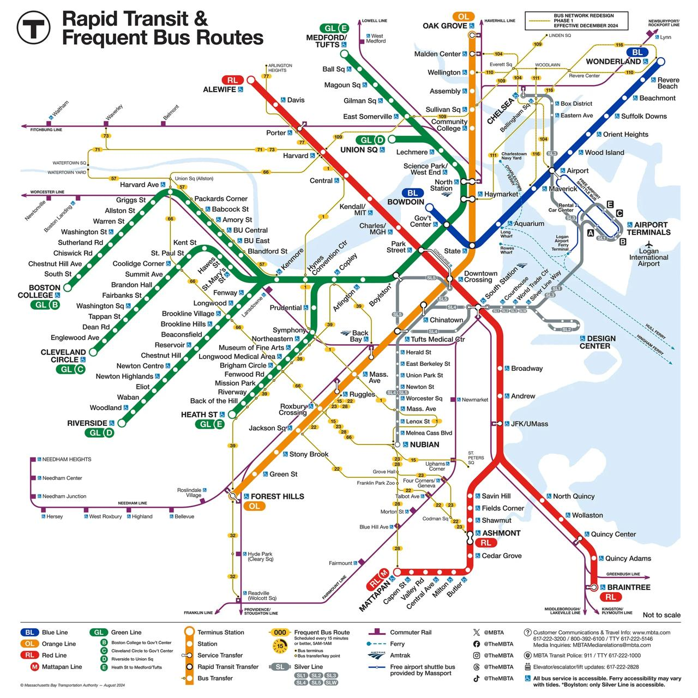

📍 Venue Location
Boston City Hall
1 City Hall Square, Boston, MA 02201
🚇 Public Transportation
- Green Line or Orange Line to Government Center Station (2 min walk)
- Red Line to Park Street Station, then walk 5 minutes
🚗 Parking
- City Hall Plaza Garage ($25/day)
- Center Plaza Garage across from City Hall
🏨 Nearby Hotels
- Omni Parker House (0.2 miles)
- Hyatt Centric Faneuil Hall (0.3 miles)
- Canopy by Hilton Downtown Boston (0.4 miles)